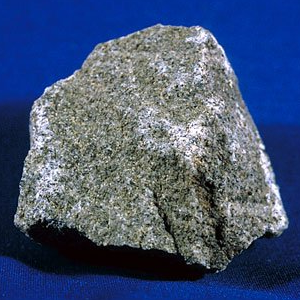

←
→
Lithium (from Greek: λίθος, translit. lithos, lit. 'stone') is a chemical element with symbol Li and atomic number 3. It is a soft, silvery-white alkali metal. Under standard conditions, it is the lightest metal and the lightest solid element. Like all alkali metals, lithium is highly reactive and flammable, and is stored in mineral oil. When cut open, it exhibits a metallic luster, but moist air corrodes it quickly to a dull silvery gray, then black tarnish. Lithium metal is isolated electrolytically from a mixture of lithium chloride and potassium chloride.
The nucleus of the lithium atom verges on instability, since the two stable lithium isotopes found in nature have among the lowest binding energies per nucleon of all stable nuclides. Because of its relative nuclear instability, lithium is less common in the solar system than 25 of the first 32 chemical elements even though its nuclei are very light: it is an exception to the trend that heavier nuclei are less common.For related reasons, lithium has important uses in nuclear physics.
It never occurs freely in nature, but only in (usually ionic) compounds, such as pegmatitic minerals which were once the main source of lithium. Due to its solubility as an ion, it is present in ocean water and is commonly obtained from brines. Lithium and its compounds have several industrial applications, including heat-resistant glass and ceramics, lithium grease lubricants, flux additives for iron, steel and aluminium production, lithium batteries, and lithium-ion batteries. These uses consume more than three quarters of lithium production.
The transmutation of lithium atoms to helium in 1932 was the first fully man-made nuclear reaction, and lithium deuteride serves as a fusion fuel in staged thermonuclear weapons. Lithium is present in biological systems in trace amounts; its functions are uncertain. Lithium salts have proven to be useful as a mood-stabilizing drug in the treatment of bipolar disorder in humans.